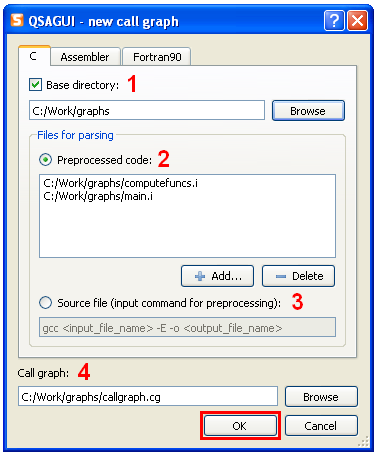
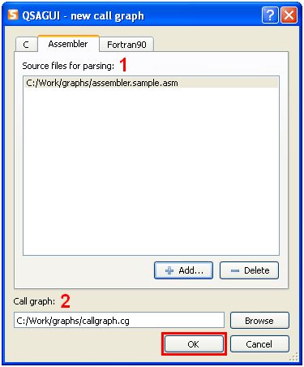

Contents
Create call graph
Use "Call graph"-> "New..." or "New" button on tool bar or "Ctrl+N".
You can parse C, assembler ( only Intel syntax based assemblers (MASM) ) and fortran ( only fortran90 standard ) codes.

1. You can ignore this option, but if you don't want to see information related to system headers that was included in .c (like stdio.h and functions like printf()), enter the full path to directory with source code.
2. 3. Specify one of two type of files for parsing - from preprocessed code or from source file. In the first case you can add several files to list - call graph for each file will be created and then all call graphs will be linked together. In the second case enter command for preprocessing (see the documentation for your compiler for it).
4. Select full output call graph name, you can write any extention but ".cg" is recommended.
 
1. This option is similar to 2. in C. Select one or several assembler/fortran90 source files.
2. This option is similar to 4. in C.
Press the "OK" button to get call graph.